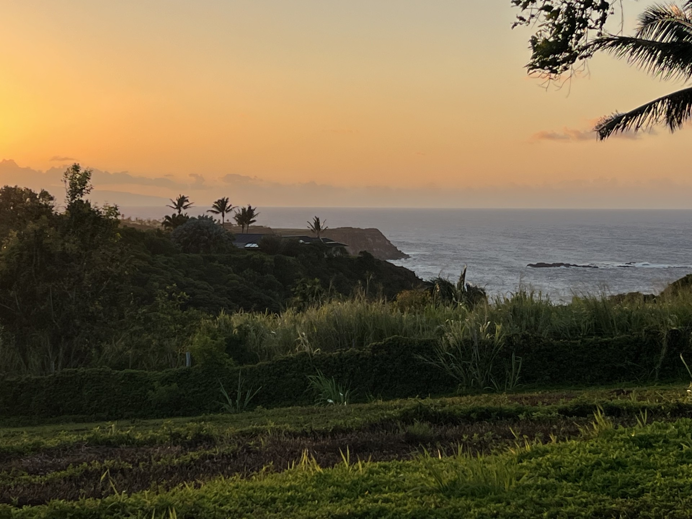
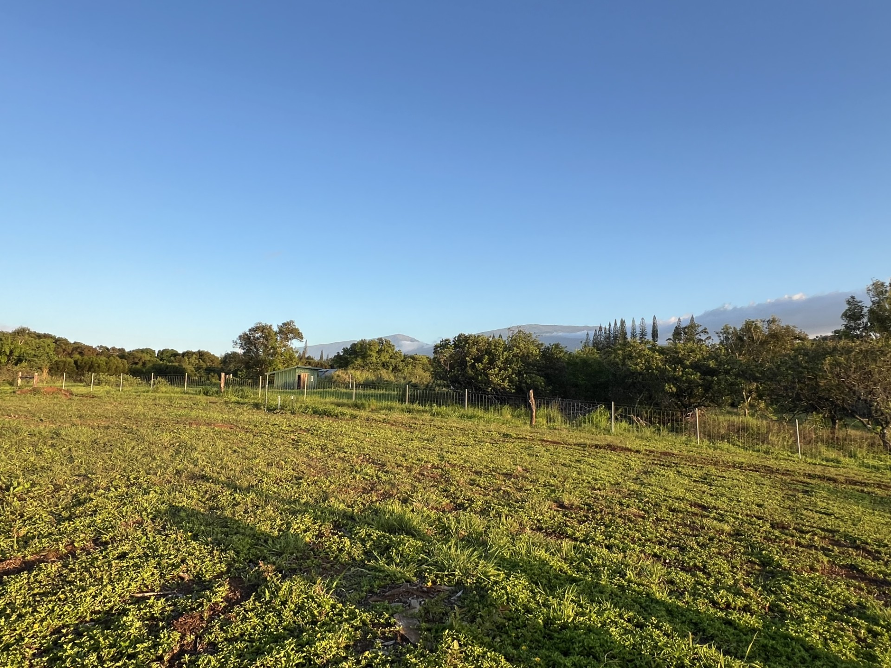
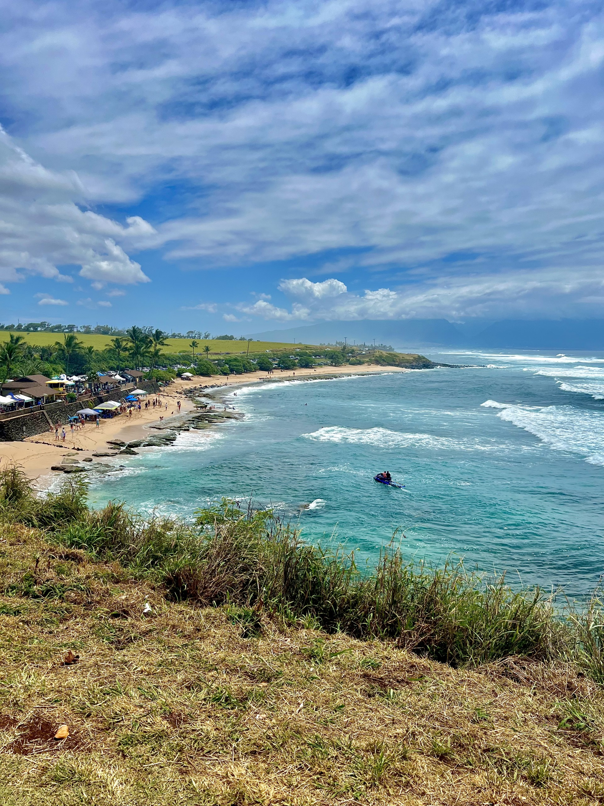
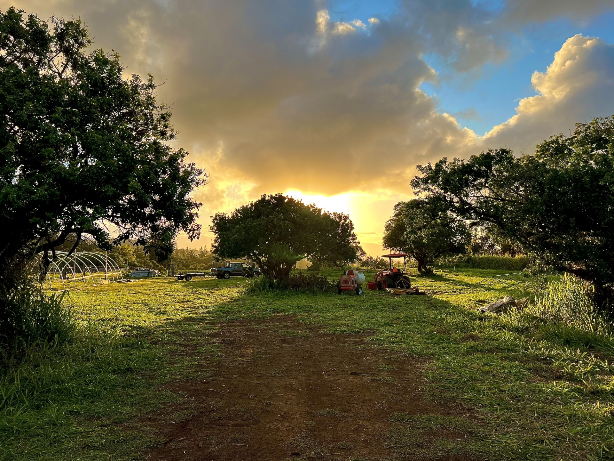
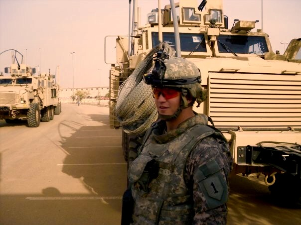

Gallery
Life at the Retreat





Healing through land, sea, and community — a retreat for combat veterans living with PTSD.
Set on the island of Maui, we create a space where veterans can heal at their own pace — reconnecting with the land, with others who understand, and with themselves. No clinical sterility. Just real work, open skies, and a community that has your back.
Our retreats are built around three pillars — purposeful work, natural healing, and real human connection. No lectures, no pressure. Just a structured environment where veterans can breathe again.
Hands-on agri-therapy on our Maui farmland. Growing food, working the land, and finding purpose in daily honest work. Evidence-backed and deeply grounding for combat PTSD.
Hiking, surfing, paddling, fishing — the island of Maui becomes your backyard. Physical activity in nature is one of the most effective tools for managing trauma and anxiety.
Small group retreats that build real bonds. Shared meals, shared work, and the warmth of the local Hawaiian community. You won't be alone here.
Our retreat is set on private land on the island of Maui — one of the most naturally therapeutic places on earth. Warm weather year-round, ocean access, and rich farmland create the perfect environment for recovery and reflection.
Far from the noise of daily life, veterans come here to reset. The aloha spirit of the local community is woven into everything we do.




We're not currently running retreats — Turning the Tides is in formation, and we're working hard to launch our first retreats soon. Add yourself to the waitlist below and we'll reach out the moment applications open.
Our retreats will be completely free for combat veterans. Fill out the form below and we'll keep you posted. All information is kept private.
Money isn't the only way to help. We need volunteers — especially on Maui — for everything from farm work to cooking, transportation, and just being a friendly face. Veterans and civilians both welcome.
Turning the Tides is in formation as a Hawaii nonprofit. We're not yet set up to accept public donations through the website — but we'd love to hear from you.
If you feel called to support the mission — whether that's a personal gift, a corporate sponsorship, an in-kind donation, or just a conversation — reach out directly.
Online giving will open soon — once our 501(c)(3) status is confirmed, all donations will be tax-deductible.

Turning the Tides was founded by John Collins, a U.S. Army infantryman who served two combat tours in Baghdad, Iraq — in 2008 and again in 2010. Like many combat veterans, John came home carrying weight that didn't show up on an X-ray.
What turned things around for him wasn't a clinic or a program. It was other combat veterans — people who had been there, who didn't need an explanation. It was time on the land. The slower pace of life on Maui. A community that simply understood.
Turning the Tides is built directly from that experience — a structured offering of the things we know work, designed so other combat veterans can access them too. This isn't a top-down program. It's veterans helping veterans, on land that knows how to heal.
"If it worked for me, it can work for others. That's what this is all about." — John Collins, Founder